Tower
This is a revised and expanded version of "The Tower Card: Some History," which appeared (without images!) in Numen Naturae: Dismantling the Tower, edited by Casandra Johns (House of Hands, 2017), 95-105. The current post was completed in May, 2018.
The Tower card is not documented as “The Tower” in any language until the 1850s. Before that, the card occasionally did not show a tower at all. In the earliest list of tarot subjects, the Sermones cum Ludus of c. 1500, NE Italy, the card is called La Sagitta, (The Arrow), meaning a lightning bolt. Other names were Il Fuoco (Fire) and La Foudre (Lightning). It was called Magione di Plutone (House of Pluto) by Pietro Aretino in 1543, Casa de Diavolo (House of the Devil) by G. Bertoni in c. 1550, and Casa del Danato (House of the Damned) by Paulo Giovo in 1559. By the mid-seventeenth century in France it started was called Maison-Dieu or Maison de Dieu (House of God), by which it is still known in the Tarot de Marseille (TdM). In the 1850s a company in Italy finally called it Il Torre, the Tower.
What is the meaning or meanings? I will proceed historically.
The Card in the Context of the Medieval Cosmos
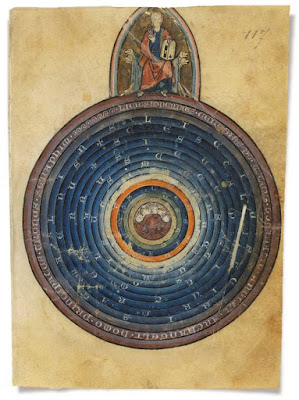 In most of the early cards where fire is shown, it is either in a high place (the top of the tower) or coming down from a high place (as lightning). In the medieval world-view, the spherical earth was surrounded by a series of other spheres (at right, L'image Du Monde by Gossuin de Metz, Bibliothèque Nationale de France, 13th century) (13). First was earth, then water (in the seas, etc,), then the air, then a sphere of the fourth element, fire (in red at right), and after that the celestial bodies, starting with the moon.
Francesco Piscina in 1565, in the only actual commentary on the card from the early period (14), refers precisely to this concept. He sees the air as the place where the "demoni" fly about, according to the Platonists, "sons of the gods but neither earthly nor celestial." So they say that the demons "are spirits that fly in the air and are somehow in the middle between gods and men." Then he adds (15):
Dietro i Demoni viene il Fuoco per debito mezo fra le stelle cose celeste, & le mondane per essi si come i Naturali o Filosofi affirmano elemento che prima si trovi della Luna, Sole, o d'ogni altra Stella.So naturally when there is fire from heaven, it would be that sphere it comes from. However there is a problem, if we look at the early cards. Many of them show the fire emanating from the sun, which of course is in a higher sphere than that of Fire.
(After the demons comes Fire, as the due mean between the stars, which are celestial, and mundane things. It is, as affirmed by naturalists or philosophers, the element that is found before the Moon, the Sun, and every other Star.)

16:8: et quartus effudit fialam suam in solem et datum est illi aestu adficere homines et igni.Apparently the fourth angel can use the sun as a source of heat and fire. From Pinterest on the internet, I found an illustration of this verse, said to be from Normandy c. 1320-1330 (at right above) (17). The angel seems to be tipping his vial onto the sun, which then pours fire onto the earth. The person posting does not say what manuscript it is from.
(16:8: And the fourth angel poured out his vial upon the sun. it was given unto him to afflict men with heat and fire.)
I found another from around the same time and place, at right, identified on the website of the Morgan Library in New York as from "England and France" --i.e. probably again Normandy--of 1255-1260 . The inscriptions are Rev. 16:8 and 16:9, the Morgan website says. The angel tips his vial "upon the sun," and fire sweeps down, but mostly not from the sun itself, or the vial, but from the blue border that seems to separate things below from things above. It is as though the fire from the vial were a kind of spark to set the ring of fire shooting flames downward. This may or may not be a fine point. In the illustration shown previously, the fire goes from the sun directly. (18)
17: et septimus effudit fialam suam in aerem et exivit vox magna de templo a throno dicens factum estVerse 18 gives the earthquake that seems to cause the men in one card to lose their footing and do part of the damage to the tower. Verse 21 explains the little globes, at least the white ones, that are falling on other cards.
18: et facta sunt fulgora et voces et tonitrua et terraemotus factus est magnus qualis numquam fuit ex quo homines fuerunt super terram talis terraemotus sic magnus
19: et facta est civitas magna in tres partes et civitates gentium ceciderunt et Babylon magna venit in memoriam ante Deum dare ei calicem vini indignationis irae eius
20: et omnis insula fugit et montes non sunt inventi
21: et grando magna sicut talentum descendit de caelo in homines et blasphemaverunt homines Deum propter plagam grandinis quoniam magna facta est vehementer.
(17: And the seventh angel poured out his vial upon the air. And there came a great voice out of the temple from the throne, saying: It is done.
18: And there were lightnings and voices and thunders: and there was a great earthquake, such an one as never had been since men were upon the earth, such an earthquake, so great.
19: And the great city was divided into three parts: and the cities of the Gentiles fell. And great Babylon came in remembrance before God, to give her the cup of the wine of the indignation of his wrath.
20: And every island fled away: and the mountains were not found.
21: And great hail, like a talent, came down from heaven upon men: and men blasphemed God, for the plague of the hail: because it was exceeding great.)
In a manuscript known as The Cloisters Apocalypse, of c. 1330 Normandy, similar globes representing hail fall from the sky (20); so the red globes that we see in the Noblet are likely fire, even if fire is not represented that way in the manuscripts.. That a tower would crumble from the onslaught, including horrible winds, is suggested by the bent tree in the illumination. Also, the fire emanates from a red line separating the air from the celestial region (in blue)
While Rev. 16 is the only place that has all the elements in the early Tower cards, the Bible does furnish other examples of fire from heaven. Most notably, there is the burning of Sodom and Gomorrah, described as caused by fire from heaven. Gen. 19:24 says:
igitur Dominus pluit super Sodomam et Gomorram sulphur et ignem a Domino de caelo.Although a tower is not mentioned specifically in this verse, in an illumination of around 1250, one would seem to be implied by the falling pieces that look like the tops of towers. (21).
(And the Lord rained upon Sodom and Gomorrha brimstone and fire from the Lord out of heaven.)
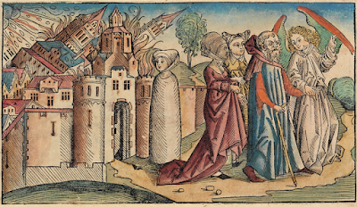Although late enough to have been inspired by the Tower card itself, the Nuremberg Chronicle's depiction of the same scene, 1496, provides an ample number of such towers (at right below) (22).
Otherwise, there is also Satan's tormenting of Job, with God's permission, to test his faith. (I owe this association to Andrea Vitali, at http://www.letarot.it/page.aspx?id=128). In the book of Job, Chapter One, servants come running up to Job with terrible news. The first tells of a murderous attack by the Sabeans. Then:
1:16: cumque adhuc ille loqueretur venit alter et dixit ignis Dei cecidit e caelo et 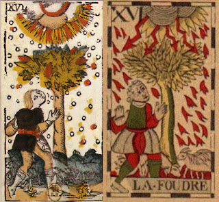tactas oves puerosque consumpsit et effugi ego solus ut nuntiarem tibiAlthough the lightning only hits the tree, the shepherd, lightning, and sheep or goat may well have been an inspiration for the c. 1650 Viéville card shown previously (at right; the sheep are on the lower right of the card, Barely distinguishable from the rest of the scene in dark gray). A later version of this scene is in a Flemish card of the 18th century, whose title translates as "Fire" (23) .
(1:16:...another servant came and said, “Lightning struck the sheep and the shepherds and killed them all. I am the only one who escaped to tell you.")
Job's house is also destroyed, but by wind, as another servant relates:
1:19: repente ventus vehemens inruit a regione deserti et concussit quattuor angulos domus quae corruens oppressit liberos tuos et mortui sunt et effugi ego solus ut nuntiarem tibi:After such disasters Job falls on to his knees and says his famous "The Lord giveth, and the Lord taketh away." He has achieved a higher order of faith. There is no tower here, but perhaps a house will do.
(1:19: "A violent wind came on a sudden from the side of the desert, and shook the four corners of the house, and it fell upon thy children, and they are dead: and I alone have escaped to tell thee.")
So now we have all the elements of the early cards: sun, fire-flash or lightning, a ruined tower, and people caught up in the devastation. The card does not have to be the Apocalypse, as there are other examples in the Bible, some expressing God's wrath, others, as in the case of Job, simply his power and that of the other immortal beings who act with his permission. Still missing are the two people actually falling from the tower, first seen in the Noblet of 1660s Paris. .
In fact there is precedent for those two figures in images going back to the Renaissance. One is in relation to the very famous tower of Genesis 11, whose construction is thwarted by God, i.e. the Tower of Babel, no doubt the predecessor for that of "Babyl-on" depicted in the illumination of Rev. 16:17-21 shown previously. In Genesis 11:4 we read of its builders:
11:4: et dixerunt venite faciamus nobis civitatem et turrem cuius culmen pertingat ad caelum et celebremus nomen nostrum antequam dividamur in universas terrasGod’s response is to cause the people to speak in different tongues, so that instead of one people they will be numerous peoples. He says, presumably to his angels (11:7):
(11:4: And they said: Come, let us make a city and a tower, the top whereof may reach to heaven; and let us make our name famous before we be scattered abroad into all lands.)
11:7: venite igitur descendamus et confundamus ibi linguam eorum ut non audiat unusquisque vocem proximi sui.No fire from heaven.is mentioned, or even any destruction. But according to extra-biblical legend, God also caused the instigator and his workmen to be thrown from the tower. The English author John Lydgate, in accord with that tradition, in his Fall of Princes describes the builder Nimrod as falling from the tower due to God’s wrath (line 1167 of the poem) (24). The artist of one manuscript has added an assistant for good measure, and similarly another accompaniment of God's wrath, the fire and lightning as his customary means to deliver judgment (25). The result is strikingly like the "Tarot of Marseille" (TdM) version of the card. While the poem was written around 1450, no one knows when the illuminations were added, as typically blank spaces were left for that purpose (26). The upper central image is clearly the Tower of Babel, since it is preceded by Adam and Eve and followed by the Flood.
11:8: atque ita divisit eos Dominus ex illo loco in universas terras et cessaverunt aedificare civitatem
(11:7: "Come ye, therefore, let us go down, and there confound their tongue, that they may not understand one another's speech."
11:8. And so the Lord scattered them from that place into all lands, and they ceased to build the city.)
And after the prophecy of Isaiah, at the entering of our Lord into Egypt, the idols fell down, for like as at departing of the children out of Egypt, in every house the oldest son of the Egyptians lay one dead, in like wise at the coming of our Lord lay down the idols in the temples.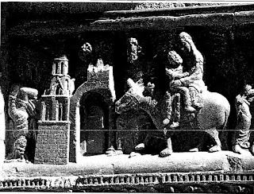 I would have thought "idols" were statues, and here they have their legs bent rather than broken; nor are they inside a temple. However I find the same interpretation in a rather learned essay on the cathedral by Professor Stephen Murray, Professor of Medieval Art History at Columbia University (31), Also, a tableau in the Moissec Abbey Church near the Spanish border, photographed by David, shows the Holy Family on their donkey passing by a similar temple, with at least one falling figure, although in this case seemingly a statue broken at the waist. (32).
As an account of how the card with the crumbling and burning tower first arose, the image at Amiens is a dubious source, in that no early card shows figures falling from a tower. But it could well have been the source of the detail of the two figures that we see in the Lydgate illumination and again in the Noblet tarot of 1660s Paris and thereafter.
The Lightning Stuck Tower in the Context of 16th century fortune-telling
Andrea Vitali, in his iconological essay on the Tower (http://www.letarot.it/page.aspx?id=128&lng=ENG, from which I take the quotations and images) observed that in Sigismondo Fanti's Triompho di Fortuna of 1527, the image of a lightning-truck tower appears several times, each with a slightly different fortune. Three verse examples illustrate three meanings he gives to the image.They are all in section 52 of the work, described generically as:
in che luogo daranno quest’anno i fulgori: dimostra L’Auttore in questo luogo, che Dio acciochè gli huomini si r’avvedano de loro errori, lassa alcuna volta incorrere, che i folgori diano in alchuni luoghi. Onde il Fanti minaccia molto ogni generatione di persone, ma sopratutti coloro che tengon poco conto del colto divino”
(where lightning will strike this year; in this place, the Author shows that God, in order to make men repent of their errors, sometimes allows lightning to hit certain places. Therefore, Fanti greatly threatens [warns?] every generation of people, but especially those who take little heed
of divine worship.)
Nanti che s’empia della Luna i corniDa dieci fiate i celesti fulgoriNe i letti caderan di gran SignoriSe tirannia non scaccia in brieve giorni.(Before the Moon fills its horns (i.e., becomes full)From ten points in the sky the celestial lightningWill fall into the beds of the great LordsIf in a few days they will not break out of tyranny [i.e. cease to be tyrants]
Marte furioso se ben fisso miriLe saette dimostra a cascar hannoNe i feminili monestier quest’annoPel disordine: che fa i ciel se adiriIf you look carefully at furious MarsThe lightning-bolts show that they fallThis year in female monasteriesBecause of the disorder that makes the heavens angry
A different interpretation is found in another fortune associated with this image:
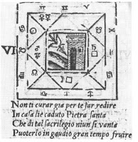Non ti curar gia per te far redireIn casa liè caduta Pietra SantaChe di tal Sacrilegio niun si vantaPuoterlo in gaudio gran tempo fruire.(Do not worry about telling peopleThat the Holy Stone has fallen into your house,Although nobody usually boasts of such a divine manifestation,In order to enjoy it as long as possible.)
That a stone coming from heaven was called a Bethel I cannot verify precisely, but it is reasonable. Tthe ancient term was "Baetylus", from "Beth-el" (https://en.wikipedia.org/wiki/Baetylus). There is also the stone of Jacob, at Genesis 28:22, ""this stone, which I have set up for a pillar, shall be God’s house..." i.e. Beth-el.The idea that lightning could be of two kinds, one destructive, the other benevolent, is already in Pliny, who divides lightning stones into black and red in his Naturalis Historiae (XXXVII, 134). The round black ones were sacred and called Bethels, and could be used to conquer enemy towns and fleets, while the red ones were normally called simply lightning bolts. In popular tradition, any stone coming from the heavens was called a Bethel (the term comes from the Hebrew Beth-el = House of God).
In modern terms, the stone would be a "bolt from the blue," that is an idea that was not anticipated, perhaps shakes one up, and increases one's understanding in some significant way. Later we shall see an illustratin of this point from the Jungian writer Sallie Nichols. It could be something said by another person or something welling up from one's own unconscious, like a disturbing but beneficial dream.
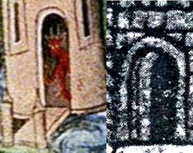The 15th or 16th century black and white image, in the second set of cards I posted earlier, has something in the doorway. What it is can be understood in terms of the Lydgate illumination. Enlarging the doorway on the card (near right) and comparing it to the doorway in the book illumination (far right), we can see that the figure in the card closely resembles the red devil. (33) He has flown down, or up, to take charge of this structure; perhaps he even inspired it. So this center card would seem to be a "house of the devil."
There is another thing. In the Lydgate illustration the tower looks like a Moslem minaret, as it does in the relief at Amiens. To Christians, that would have qualified it as a "house of the devil." They were destroying minarets in formerly Muslim Spain, as perhaps Muslims had destroyed Christian churches there earlier. Each was the "house of the devil" to the other, and the "House of God" to themselves.
{kind=link}
The image of the tower hit by God's wrath, whatever specific other interpretations are made, also corresponds to one of Giotto's vices in the chapel he decorated in Padua, c. 1305, near left above. It is the vice of Inconstancy, which he represented as a woman trying to stay upright on a floor that has suddenly tilted or shaken, as though hit by an earthquake; her loss of footing is similar to that of the men in the the Bolognese version presented at the top of this essay. The building, and consequently the lady, are shaking and unsteady, like someone's Inconstant faith in the face of temptation or adversity. (39)
At some point the "House of the Devil" become the "House of God". How did this happen? According to Andrea Vitali, the expressions "House of the Devil" and "House of God" have the same colloquial meaning in Italian, in each case a place far away. (40) Other possibilities are a derivation from "Bethel," "God-house" as the stone fallen from heaven are called, and the interpretation of the Tower as the Garden of Eden, suggested by the minchiate image.
Tarot history pioneer Gertrude Moakley speculated that perhaps the title “maisondefie,” which she found listed in an 1886 German catalog, had led to the name “Maison-Dieu,” House of God (41). Noblet had used the latter term in the 1660s, long before 1886, but perhaps the word Moakley saw was the corruption of a previous term that somehow survived. Similarly Thierry Depaulis proposed that perhaps it had been “Maison De Feu,” House of Fire, misread as “Maison-Dieu.” (42) But even if so, I don't think we can just write off the title "Maison-Dieu" as a mistake; it was used repeatedly and so acquired a life of its own with its own contribution to the card's meaning.

In medieval France, the term maison followed by dieu did mean something besides the card. As "maison de Dieu" it referred to the Temple of Jerusalem (at right) (43), which God allowed to be destroyed twice; and at the crucifixion its veil was rent in lightning and earthquake. It also, by extension referred to any church, sanctuary, or temple. However the term

"Maison-Dieu" by itself was equivalent to "Hotel-Dieu,", which meant a hospital or hospice, that is a place where people were carried for until they either got better or died, a kind of Last Days scenario on a personal level. The term meant the same in England, as can be verified in the Oxford English Dictionary (44).
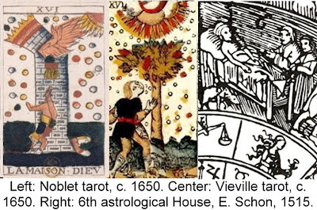In this connection there is a sixteenth century depiction of the twelve astrological houses utilizing scenes that suggest the tarot, far right above (45). For the sixth house, that of sickness, it has a man in bed being visited by two others, while a dog, probably belonging to the man in bed, looks on mournfully. That scene of personal catastrophe, requiring a renewal of faith, seems to explain, in the Noblet Maison-Dieu, why smoke from the tower seems to reach up toward the source of the lightning. In this version, the tower seems an image of the mortal human as a House of God. The Viéville can be seen similarly. The shepherd's upraised hands as a pleading to God, not merely to be spared but to be accepted into the New Jerusalem.
{kind=link}
The horoscope designer might have had the phrase "Maison-Dieu" (even at this early date) and not the image. If so, he might have put in the horoscope a man in a sick-bed being visited by two others and his dog. It is at such times that one gets a message from one's body: death is not so far away as you think. So repudiate the Devil now and be saved. In Jesus, the light from above, the Devil is defeated, if one chooses in time.
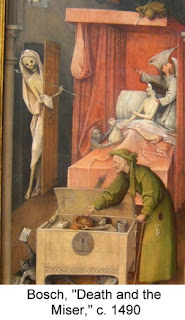 The idea of the death-bed repudiation of the devil was not uncommon in art in Schoen's time. For example, there is Bosch's famous painting Death and The Miser (48). A devil seems to offering the man some kind of deal, such as recovery and the opportunity to make even more money, while the angel is counseling him to consider his immortal soul. In this interpretation, "Maison-Dieu" is both the hospice and another God-House, the human body, made by God in his own image.
In the Noblet and other "Tarot of Marseille" Maison-Dieu cards (above), the tower has three windows. This feature associates the card with the story of Saint Barbara. In the legend, her father kept her locked in a tower, but also commanded that a bathhouse be built for her (49). A devout Christian, in his absence she had three windows put in it, to represent the Holy Trinity. Her pagan father had her dragged before the authorities, where she was tortured and thrown into prison, which was filled with light during the night. Her father carried out her sentence of beheading personally, but on the way home was killed by lightning. This story has four images related to the card: the tower that was her home, the
 bathhouse with its three
windows, her prison filled with light, and her lightning-struck father.
Of these the three windows of the Trinity make the bath-house tower a
House of God; the light does the same for the prison. turning a place of
suffering into a holy temple as well, when Barbara is in it. The tower
struck by lightning is in this story the father, a kind of “House of
the Devil” whose suffering will presumably continue in hell. Such an outcome is suggested in the minchiate card of Giuseppe Maria Mitelli, originally 1664 Bologna (50).
bathhouse with its three
windows, her prison filled with light, and her lightning-struck father.
Of these the three windows of the Trinity make the bath-house tower a
House of God; the light does the same for the prison. turning a place of
suffering into a holy temple as well, when Barbara is in it. The tower
struck by lightning is in this story the father, a kind of “House of
the Devil” whose suffering will presumably continue in hell. Such an outcome is suggested in the minchiate card of Giuseppe Maria Mitelli, originally 1664 Bologna (50).In one way of seeing the card, then, the fire is a lightning-bolt sent by God and the Universe to punish sinners, who have made themselves a "house of the devil", a precursor of the hell to which they are in danger of being sent.Such an example on a card warns others to repent of their ways. On the other hand, as in the case of Job and his servants and shepherds, it can a test of faith for those who remain and a warning that death can come at any time. In Job's case, the more reason to despair, the more the merit in faith. One’s soul thereby becomes a “House of God.” Similarly, at the Apocalypse fire from heaven afflicts good people and evil people alike. For the bad, it is punishment and a warning to repent. For the good, it is a test of their faith.
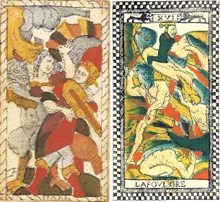The Catelin Geoffroy card of 1557 Lyon, with Orpheus losing his Euridice (at the far right), is perhaps an example of the test of faith failed. (51) Leaving Hades, Orpheus could not trust that Eurydice was still behind him, that Hermes was fulfilling his part of the deal. He had to turn around and see for himself, and so she was lost to him. There is not much of a tower, just smoke pouring from either a window or a stack.
In an Anonymous deck of around 1625 in Paris (near right), there is no tower at all, just a hell-mouth (52). People seem to be carried off to Hell, the punishment of evil-doers. Or, in the case of the maiden Persephone, daughter of the earth-goddess Demeter abducted by Hades, it is just that the Lord of Hell wants a certain person's company.
 which a similar purification was obtained for the "philosophical" metal, as well as for the soul of the alchemist (53). However it may be that the two men are not devils, but rather the purified soul, now escaping the tower of attachments.I get that from a suggestive alchemical drawing in which a living humanoid being is in the air. (54) It may be that he will stick to the side of the flask and be gathered as a precipitate, as suggested in another alchemical work of the same period. It would appear that a devil is in a process of transformation. I have put a translation of the Latin beside each of the successive images. (55)
which a similar purification was obtained for the "philosophical" metal, as well as for the soul of the alchemist (53). However it may be that the two men are not devils, but rather the purified soul, now escaping the tower of attachments.I get that from a suggestive alchemical drawing in which a living humanoid being is in the air. (54) It may be that he will stick to the side of the flask and be gathered as a precipitate, as suggested in another alchemical work of the same period. It would appear that a devil is in a process of transformation. I have put a translation of the Latin beside each of the successive images. (55)A purifying role is also suggested from its interpretation as the sphere of fire between the air of demons and the celestial bodies, as we have seen advocated by Piscina (56). Again it burns off attachments that would make the soul too heavy to rise.
In this regard there is a certain similarity between the tower of the card and the Mount of Purgatory in Dante's Divine Comedy, which had a perpetual fire burning at the top.From very close to the time of the first known card is this fresco in the cathedral of Florence, done 1465 (57), of which a detail is below. The fires of Purgatory purify the souls of sinners, so that they will be ready to enter Paradise, which Dante places in the region of the seven planets, of which the first, the Moon, is visible in the detail below.
In the Renaissance and after, there was another account of the journey of the soul that probably seemed like a Platonic predecessor to that of Dante, in one of those precious Greek texts that came from Byzantium, namely Plutarch's Moralia. The last few pages of the essay "On the apparent face in the orb of the moon," describe the life of the soul after death as an ascent through the space between the earth and the moon, until the lucky ones finally arrive on the surface of that body. He puts Hades, the Greco-Roman Hell, in that space. He says (59):
All soul, whether without mind or with it, when it has issued from the body is destined to wander in the region between earth and moon but not for an equal time. Unjust and licentious souls pay penalties for their offences; but the good souls must in the gentlest part of the air, which they call "the meads of Hades," pass a certain set time sufficient to purge and blow away the pollutions contracted from the body as from an evil odour. Then, as if brought home from banishment abroad, they savour joy most like that of initiates, which attended by glad expectation is mingled with confusion and excitement. ..A footnote refers us to Plutarch's "De Genio Socrates," another essay in the Moralia. There we see this "region of the air" described in terms of thunder and lightning (60):
As the Styx draws near the souls cry out in terror, for many slip off and are carried away by Hades; others, whose cessation of birth [footnote 127: release from the cycle of birth and death] falls out at the proper moment, swim up from below and are rescued by the Moon, the foul and unclean excepted. These the Moon, with lightning and a terrible roar, forbids to approach, and bewailing their lot they fall away and are borne downward again to another birth, as you see.Those that survive the ascent, however, "go about like victors crowned with wreaths of feathers called wreaths of steadfastness, because in life they had made the irrational or affective element of the soul orderly and tolerably tractable to reason;..." (61). It is not hard to see how the above description would work as a Platonic interpretation of the spheres of air and fire, parallel to the christian Hell and Purgatory, after which comes the heavens. Such an interpretation, to be sure, replaces the sun with the moon as the source of the lightning. It is its place in the sequence in the journey of the soul, between Hades and the celestial bodies, that speaks in its favor. So in a sense, from the perspective of Dante and Plutarch, to leave the "House of the Devil"--interpreted broadly to include Purgatory--is the first step in the return to Paradise.
From de Gébelin to the Occultists
Court de Gébelin, in his famous Egyptian interpretation of the cards, called it "The Castle of Plutus," i.e. the god of wealth. He comments (62):
Pour le coup, nous avons ici une leçon contre l'avarice. Ce tableau représente une Tour, qu'on appelle Maison-Dieu, c'est-à-dire, la Maison par excellence; c'est une Tour remplie d'or, c'est le Château de Plutus: il tombe en ruines, & ses Adorateuers tombent écrasés sous ses débris.This story is indeed in Herodotus (63), about two thieves, sons of the tower's architect, who had provided for them a secret entrance. But unlike in de Gébelin's telling, they did not fling themselves off the tower. One was caught in the Prince's traps and had the other cut off his head to prevent his identity from being known. The other ends up marrying the Prince's daughter. It is only a tale about keeping one's wits about one, whether in thievery or in love.
A cet ensemble, peut-on méconnoître l'Histoire de ce Prince Egyptien dont parle Hérodote, qu'il appelle Rhampsinit, qui, ayant fait constraire une grande Tour de pierte pour renfermer ses trésors, dont lui seul avoit la clef, s'appercevoit cependant qu'ils diminuoient à vue d'oeil, sans qu'on passât en aucune maniere pat la seule porte qui existât à cet édifice...?
(This time we have a lesson contra avarice. This tableau represents a Tower, which one calls the House of God, that is to say, the House par excellence; it is a Tower stuffed with gold, it is the Castle of Plutus: it collapses in ruins, and his Worshippers fall crushed under the debris.
In this ensemble, can we ignore the History of that Egyptian prince about whom speaks Herodotus, and whom he calls Rhampsinitus, who, having constructed a great stone tower for holding his treasures, & for which he alone had the key, noticed nevertheless that it diminished before his eyes, without someone passing in any way through the sole door that existed in this edifice...?)
Herodotus has another story with a tower I think fits the tenor of the card better, namely his account of the deaths of Cambyses and Prexaspes (64). Cambyses, king of Persia, conquers Egypt but then commits many atrocities, one of the worst, in the eyes of the Egyptians, the sacrilege of killing the Apis bull to show his contempt for the Egyptian religion. He then goes mad and, among other things, has his trusted friend Prexaspes kill his brother Smerdis. Leaving Egypt, Cambyses dies of an infection caused by carelessly cutting himself with his own sword in the same place he had stabbed the Apis bull. He would correspond to the man lying on the ground on the card. Meanwhile another Smerdis has taken the throne, pretending to be Cambyses' brother. Back in the capital, the false Smerdis calls upon Prexaspes to testify that he is the real brother, counting on him because he was the murderer of the true Smerdis. With the people assembled beneath the highest tower
 in the city, Prexaspes confesses his crime, denounces the false Smerdis and his supporters, and jumps to his death.
in the city, Prexaspes confesses his crime, denounces the false Smerdis and his supporters, and jumps to his death.This story, besides fitting the two men, makes them appropriate wearers of the Pharaonic crown. In Noblet's card, the two globes closest to their heads have been transformed into crowns of the typical upper Egyptian shape. In the Dodal, as restored by Flornoy, center, there is only one, less pharaonic, but suitable for Cambyses. By the time of Conver, 1761, both have disappeared. (65)
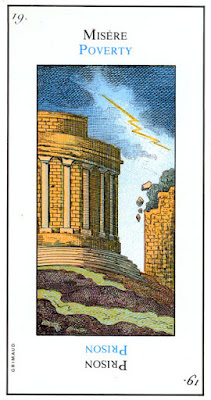 About this card a short time after de Gebelin, in 1783, Etteilla commented (66):
Nº. 19. La Maison-Dieu. Comme on voit que cette Maison ressemble à la Tour de Montgommery, que l’on vient d’abattre, ou au petit Châtelet que l’on abat, il est bien juste de n’en pas faire, comme les ignorants, le Temple de l’Eternel. Ainsi, comme l’ont témoigné les Egyptiens qui ne l’ont jamais nommée Maison-Dieu, mais Maison des châtiments de Dieu ... elle signifie Prison, misère.
(No. 19. The House of God. As we see that this House looks like the Tower of Montgommery, which has just been knocked over, or a small Castle that has been knocked over, it is very correct not to make it, like the ignoramuses, the Temple of the Eternal. So, as shown by the Egyptians, who never named it Maison-Dieu, but House of the punishments of God ...it means Prison, poverty.)Etteilla has taken the old meaning of "house of the devil" and put it in the context of the French Revolution, with its storming of the Bastille. It is simply a secular rather than other-worldly place of punishment. That lightning strikes the tower on the left side of the card may suggest the French people as the agents of destruction, perhaps even agents of Providence.
In 1856 Eliphas Lévi gave his short interpretation of the card (67).
ע Le ciel de la Lune, altérations, subversions, changements, faiblesses. Hiéroglyphe, une tour frappée de la foudre,probablement celle de Babel. Deux personnages,Nemrod sans doute et son faux prophète ou son ministre j sont précipités du haut en bas des ruines.L'un de personnages, en tombant, représente parfaitement la lettre ע, gnaïn.This expresses what must have already been obvious, except for the association with the letter Ayin and the "heaven of the moon." Lévi associates card XVI with the 16th letter in the Hebrew alphabet. Why the card should be associated with the Moon is not clear, except that since the Death card he has been going down the order, starting with Jupiter and Mars (both) for that card and skipping Venus.
ע ) The heaven of the Moon, alterations, subversions, changes, weakness. Hieroglyph, a tower struck by lightning, probably the tower of Babel. Two persons, no doubt Nimrod and his false prophet or his minister, are thrown down below the ruins from above. One of the persons in falling perfectly represents the letter ע, Ayin.)
Lévi's disciple Paul Christian is similarly consistent with what has come before. For him the key concept is "Ruin," and signifies that (68)
...dans le Monde divin, le châtiment de l'orgueil. - Dans le Monde intellectuel, la défaillance de l"Esprit qui tente de pénétrer le mystère de Dieu. - Dans le Monde physique, les écroulements de fortune.
(...in the divine world the punishment of pride, in the intellectual world the downfall of the Spirit that attempts to discover the mystery of God; in the physical world reversals of fortune.)At the end he adds (69):
... tout épreuve de l'infortune, acceptée avec résignation à la supreme Volunté du Tout-Puissant, est un progrès accompli dont tu seras éternellement récompensée. Souffrir, c'est travailler à se dégager de la Matière, c'est se revêtir de l'Immortalité.
(...the ordeals of fortune, accepted with resignation to the supreme Will of the All-Powerful, are the steps in a predestined progress for which you will be eternally rewarded. Suffering is working in order to free yourself from the bonds of material things; it is the putting on of the robe of Immortality.)This is the advice that the parable of Job seems to imply.
Papus in 1889 had a slightly different emphasis. The card represents "the invisible or spiritual world, incarnated in the visible and material world" He compares the falling figures to the "materializaton of Adam-Eve, who have been spiritualized until now." It is also the "Materialization of God the Holy Spirit... the Holy Spirit acting acting like the God of matter" (70). He does not elaborate further. He assigns the card to Capricorn, but not for any symbolic significance; it is simply the assignment given to
 that letter by the Sefer Yetzirah, which he just translated into French. All the same, the goat's horms perhaps suggest the tall walls of the Tower.
that letter by the Sefer Yetzirah, which he just translated into French. All the same, the goat's horms perhaps suggest the tall walls of the Tower.Oswald Wirth drew the card designed for Papus's book, at far left (the book also came with a set of all 22 cards, in color). As can be seen even in black and white, there are a couple of innovations. One is the title, "Fire from the Sky" (or Heaven), which returns to the previous title of "foudre" and "sagitta," thereby emphasizing the lightning rather than the tower and the medieval sphere of fire. He also turned some of the globes of the TdM card into little yods. As the first letter of "Yod-Heh-Vau-Heh", this might suggest that they represent precisely illumination from God. And he had one figure crowned, while the other has his legs more in an "Ayin" shape than the TdM version that Papus also gave, with his letter assignments on top.
.

Wirth, writing in 1927 about his design, now augmented with glyphs along the margins, compared the tower to the human body in the context of human society. Hence the flesh-colored bricks. "It is less a house of God than a sacred building of a body mistakenly identified with God." (72) He likened one of the two men on the card to the idealist who attempts “fanciful enterprises,” perhaps “sensitive to feminine charm,” 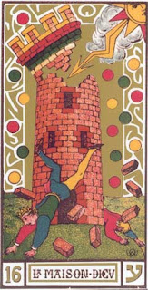 in other words a Don Quixote. He does not realize that “heights attract lightning.” (73). The lightning-bolt, from the sun of reason, brings him down to earth. Wirth compared the other to the tower’s architect, whose structure collapses with him. It is the self-creation of the individual biologically and socially, which nonetheless must yield to "the service of our spiritual kingdom" (74). The expulsion of the two figures from the tower is then a disaster only for those aspects of the personality, followed by a new beginning, more humbly, with what Wirth called “the wisdom of Sancho Panza.” (75)
Among those dedicated to fanciful ideas he includes the magus who seeks to bend spirits to his will, even in a good cause: “Woe to the vain occultist who imagines himself to be served by invisible entities! His uncertain servants live at his expense and have a hold on him in the same proportion as he has a hold on them.” (76) This seems like a jab at Waite's version of the Magician card. He also said that the card is a warning against “intolerant Churches that proclaim themselves to be infallible.” (77) That remark, too, could land on Waite's doorstep, since Waite made the lightning bolt into the Word that wreaks vengeance on those who distort that Word.
Like others in the French tradition, Wirth associated this card with the sixteenth letter of the Hebrew alphabet, Ayin, ע. Like Lévi, he saw this letter as resembling a somewhat twisted Y, corresponding to the position of the falling figure on the card. He said that originally the letter had the form of a circle, and so connoted the serpent biting its tail, which in turn connoted the serpent of the Garden of Eden, and also that of Asclepius, Greek god of healing. (78)
The Golden Dawn also identified this card with the planet Mars and the twenty-seventh “path of wisdom” (out of thirty-two), that of “active or exciting intelligence”(from the Sefer Yetzirah) and on the “Tree of Life” the path between Hod and Netzach, as in the example at left, drawn from a (to me) random site on the internet. (81). Mars is appropriate in the sense that the lightning-flash on the card is full of destructive energy. The path Netzach-Hod is usually interpreted not in terms of the meanings "Victory (Endurance, Eternity)-Splendor (Majesty, Glory)" but in terms of the planets that are, in a different way of assigning planets (to sefiroth rather than paths), associated with them, namely Venus and Mercury, With three planets in play, each of which has a variety of interpretations, this gives considerable latitude in interpretation, even if the result is usually, somehow, the destruction of the old (the tower) and the introduction of something new (the lightning).
Two Jungian Amplifications
Sallie Nichols quotes Jung to the effect that "Lightning signifies a sudden, unexpected, and overpowering change of psychic condition." (82) That by itself is rather more general than any of our tarot theorists and says nothing about the source of the lightning. But it allows Nichols to give an example from her own life. She was at a conference, and in the morning a small group of them, including "Dr. X," became involved in a discussion of new techniques in cancer therapy. At lunch she asked "Dr. X" to comment further on her work. Dr. X replied that she didn't want to talk about it just then and immediately joined some pleasant banter at the other end of the table. Nichols said that the speaker's remark left her "stunned and shocked. exactly as if I had been hit by a bolt of electricity." (83). However it turned out that the afternoon session began with this Dr. X talking on the same subject. Nichols then understood that Dr. X needed something light before her very heavy presentation. In relation to the Tower card afterwards, she noticed that the lightning isn't aimed at the people, but at the tower. Then she could see that if Dr. X had tried to explain herself to Nichols at the time, it would have been like attacking a "fortress," one of her own making, that of her focus on the topic that she wanted to pursue, as though "peering out through tiny slits." (84) In fact that's why the remark had felt like a lightning-bolt; it disrupted her own defensiveness and ego-centeredness, which the tower on the card now symbolized.
Nichols identifies this attitude with the tower rather than with the falling figures. However it is precisely they who are overpowered, falling from their great height because of their inflation. It is that inflation that in Nichols' example gets punctured like a balloon, in the sense of not taking into account the speaker's own needs.So the falling figures are in fact being liberated from that castle. Here there seems seem to be nothing of the "divine Word" about the speaker's remark: it is simply reality coming against Don Quixote. So we might wonder if Waite's analysis is not also a bit inflated.
Nichols does not examine Jung's own amplification of his statement about the meaning of lightning, which went in a direction easily related to the tarot theorists. In a footnote to the statement, he points to Luke 17:24: "...as the lightning that lighteneth ... so shall the Son of man be in his day." There is also Lactantius:...the light of the descending God may be manifest in all the world as lightning." So far, this is precisely Waite's view. that the lightning is "the materialization of the spiritual Word." However Jung amplifies his statemetn in a way that shows he does not have words in mind.(85)
Jung's statement comes in the course of discussing a series of spontaneous paintings done by a patient in analysis with him, very early in his work. It is the second of the series; the first, Picture 1, showed a woman as though stuck to a rock formation in front of an empty sea (86).
The second goes about liberating her from those egg-like rocks. She reportedly "had no notion of what picture she was going to paint." (87) It shows a powerful lightning-bolt dislodging a round piece of rock from its place in the rock formation. What is just below it is a rock in the shape of a pyramid, which seems to me not far from a tower.
{kind=link}
In the next painting, the rock is floating in an empty sky, and the lightning-bolt is replaced by a serpent floating nearby.
{kind=link}
In Picture 4, the serpent pierces in a phallic way the round rock, whose insides resemble a vaginal canal and uterus.
{kind=link}
In both 2 and 3 there is a red border to the sphere. The patient interpreted that as her defensiveness against change. However the serpent has been able to penetrate that wall, just as the lightning freed the pherical rock from the rest of the formation.
{kind=link}
After that , the serpent goes its own way. In the rest of the series the serpent no longer appears, and paintings focus on development inside the sphere.
It is tempting to give a sexual meaning to the image in Picture 4, with the sphere as the patienet and the serpent as Jung. Jung says as much. He starts out by saying that in her first session, she described a fantasy she had had while working on a landscape (88):
{kind=link}
...she saw herself with the lower half of her body in the earth, stuck fast in a block of rock. ...Then she suddenly saw me in the guise of a medieval sorcerer. She shouted for help, I came along and touched the rock with a magic wand.about which Jung comments (89).
The sexual symbolism, which for many naive minds is of such capital importance, was no discovery for her. She was far enough advanced to know that explanations of this kind, however true they might be in other respects, had no significance in her case. She did not want to know how liberation might be possible in a general way, but how and in what way it could come about for her.Hence the series of paintings, in which, yes, "just as the magician has been replaced by the lightning, so the patient has been replaced by the sphere." (90) But what Jung is struck by, in her Picture 2, is the parallel to the 17th century mystic Jacob Boehme, whom he quotes at length (seven pages, of which I give here just the beginning) (91).
"The flash is the birth of the light." ...It has transformative power: "For if I could in my Flesh comprehend the Flash, which I very well see and know how it is, I would clarify or transfigure my Body therewith, so that it would shine with a bright light and glory. And then it would no more resemble and be conformed to the bestial Body, but to the angels of God." ..."The triumphing divine Birth lasteth in us men only so long as the flash lasteth; therefore our knowledge is but in part, whereas in God the flash stands unchangeably, always eternally thus."Jung is quite clear about the equivalence of the lightning-flash in painting 2 to the serpent in painting 3: "...the lightning has the same illuminating, vivifying, fertilizing, transforming and healing function that in our case falls to the snake..." (92) We can see these changes inside the sphere in the rest of the sequence. But besides all these nice things, there is another side. Jung quotes Boehme's alchemically-tinged comments on Mercurius, the "source-Spirit" that "arises in the fire-flash" (93):
"Mercurius is the animal spirit," which, from Lucifer's body, "stuck in the Saltniter [Note 13: Saltniter = Saltpeter, like salt, the prima materia] of God like a fiery serpent from its hole, as if there were a fiery Thunder-bolt into God's nature, which tyrannizes, raves, and rages, as if it would tear and rent Nature all to pieces."In the footnote Jung says (94):
Here the lightning is not a revleation of God's will but a Satanic change of state. Lightning is also a manifestation of the Devil. a manifestation of the Devil (Luke 10:18).
Luke 10:18 reads: "I saw Lucifer fall like
lightning from heaven." Besides Lucifer, we might think also of the fallen angels that mate
with the daughters of men, Satan's cruelties to Job, and of course the
snake in the garden.
So a blast from the unconscious is not necessarily the "materialized Word", or even the voice of reason, as Wirth stipulated. Lightning and serpents can represent wisdom and healing (e.g. the serpent on the wand of Asclepius), but also the Devil. In any case the lightning is very personal, directed only to the one receiving it, and may come only as wordless pictures. It is then up to the rational ego--which I would say corresponds to the circumference of the circle of her picture 2, with the whole circle as the Self--to explore further, get more flashes, i.e. spontaneous visions or images, and try to understand. This is part of what Jung called the individuation process.
Conclusion
It is possible for the viewer to identify with several aspects of the card: the tower as the human body, the smoke as the desire to connect with the divine in times of trouble or poor judgment. One can also identify with the two figures expelled from the tower as a kind of coming down to earth after exercising unrealistic or otherwise unfortunate ideas, harmful to oneself or others, and with the tower itself, as a defensive attitude. One detail of the card, however, remains an object for the ego not to identify with too closely, namely the lightning-bolt itself. The lightning may or may not be inspiration/warning from a higher/more powerful source, or a source of power accompanied by compassion. As a revelation from the totality of one's being, the Self, it may also be an unconscious impulse of a primitive and unthinking nature, or just another megalomania, which in either case needs taming by reason, like the dark horse of Plato's Charioteer. At least that is what the symbolism of the card suggests.